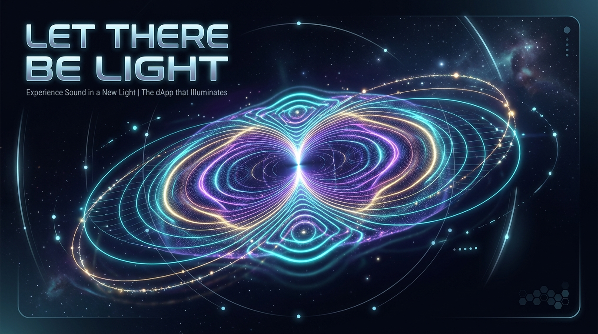

01 Thought (Intention Engine)
Shift your mental focus to alter the physics, speed, and energetic cohesion of the particle field.
02 Frequency (Vibrational Input)
Inject sonic geometry. Toggle between generator frequencies or stream your environment.
03 Matter (Cymatics & Physics)
The Triad of Creation
"If you want to find the secrets of the universe, think in terms of energy, frequency and vibration."
Cymatics is the study of visible sound and vibration. When a physical surface (like a metal plate) vibrates, particles like sand accumulate in the nodal lines—areas where the plate is completely still.
This web application models the Chladni Plate Equation:
Here, N and M define the harmonics. As you change the frequency, these ratios shift, forcing the chaotic sand-like particles into pristine geometric order.
Genesis runs a cosmological Big Bang sequence: singularity collapse, Planck flash, Hubble inflation, quark–gluon plasma, recombination (CMB), then structure formation as particles settle into Chladni nodal lines — the cosmic web of this field.
Quantum Feed Analysis
